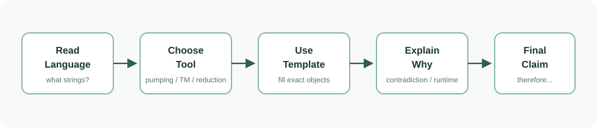

1. 先把题目里的符号读懂
CS605 的题面看起来吓人，很多时候只是用数学符号描述“哪些字符串算合格”。Language 可以理解为一组字符串；证明题就是判断这组字符串能不能被某种机器识别、判定，或者能不能在多项式时间内验证。
| 符号 | 从零理解 | 例子 |
|---|---|---|
Alphabet Σ | 允许使用的字符集合。 | Σ={0,1} 表示字符串只能由 0 和 1 组成。 |
| String / word | 由 alphabet 里的字符排成的一串。 | 0101, abba |
Σ* | alphabet 上所有有限字符串的集合，包括空串。 | {0,1}* 包含 ε, 0, 11... |
Language L | 某些字符串组成的集合。它通常由一个条件定义。 | L={w : w has even length} |
|w| | 字符串 w 的长度。 | 如果 w=010，则 |w|=3。 |
<M,w> | 把机器 M 和输入 w 编码成一个字符串。 | HALT 的输入就是“一台机器 + 一个输入”。 |
Complement L̄ | 所有不在 L 里的字符串，前提是 alphabet 相同。 | 如果 L 是偶数长度字符串，L̄ 是奇数长度字符串。 |

过关问答：先内容理解，再 past/sample paper 题，悬停或点击显示答案
内容理解题（先做 3 题）
核心答案（先确认概念）：先把符号和 language 条件翻译成人话，明确输入是什么、yes 条件是什么。
为什么这是对的：比如题面写 L={<M>:M accepts at least one string}，读完后要能说出来：输入是一台机器 M 的编码，yes 条件是这台机器接收至少一个串。关键是从数学定义里抽象出 yes condition——它是依赖有限状态、依赖计数、还是依赖模拟？这直接决定了选 pumping、decider、reduction 还是 NP 工具。
题目语境怎么用：基础符号题：遇到 <M,w> 就把机器和输入打包成字符串。遇到 L ̄ 要理解 complement 相对同一 alphabet。Q6 图问题要先画出对象关系——把 clique 翻成两两全连通点集。
卷面写法：第一步永远先写清楚语言定义、输入编码和 yes condition，开局句子本身拿结构分。然后根据条件选工具：regular/CFL→pumping；FA→decider；Java→recogniser 或 HALT reduction；图→NP。
常见失分点：跳过翻译直接开始证明用错工具（如把 FA 性质当 undecidable）。翻译 complement 忘限定同 alphabet。
核心答案（先确认概念）：把机器 M 和输入 w 编码成一个字符串，作为语言的输入。
为什么这是对的：TM 只能吃字符串不能直接吃一台机器，所以需要用编码把机器 M（状态集、转移函数）和输入 w 打包。HALT={<M,w>:M halts on w} 的 yes instance 就是机器在输入上会停机的编码对。理解 <M,w> 是做 reduction 的基础——构造新程序编码让它的性质和原 HALT 行为对齐。
题目语境怎么用：Sample A Q3 Java+变量本质也是 <J,b,c> 编码变体。把题目对象类比 <M,w>——编码后就是 decider D 的输入 D 回答 yes/no。
卷面写法：写输入形如 <M,w> 即机器 M 与输入 w 的适当编码即可，不用定义哥德尔编号。Java 相关题写输入是 <J,b,c> 的适当编码。
常见失分点：误以为 <M,w> 是两个分开输入而非统一编码。注意 <M> 和 <M,w> 是不同格式——前者只编码机器后者编码机器+输入对。
核心答案（先确认概念）：Complement 是相对于同一个 universe 或 alphabet 的所有不在 L 的字符串。
为什么这是对的：假设 L={w in {0,1}*:w starts with 0}，则 L ̄ 包含空串和以 1 开头的串——必须是由 {0,1} 组成的合法字符串。Q4 利用如果 L 和 L ̄ 都 TR 则 L decidable 的定理——complement 的精确理解直接影响 recognisability 判断。
题目语境怎么用：Q4 风格题：先证 L undecidable（HALT reduction）再证 L in TR（构造 recogniser）最后用定理推 L ̄ not in TR。L ̄ 是同类编码中不满足原条件的那些。
卷面写法：写 L ̄={<X>:<X> is valid AND <X> not in L}。加 valid 限定。Q4 推理时写 L in TR 且 L undecidable=>L ̄ not in TR。
常见失分点：忘记 complement 相对同 universe；误以为 L ̄ 含不合法编码；Q4 中把 L 和 L ̄ 的 TR 方向搞反。
考试题目题（再做 5 题）
标准答案（先写结论）：V 是学生集合，E 是社交网站 CARA 上互为朋友的学生对。
为什么这是对的：Sample B Q6A 借 CARA 网络构建图语言。V 每顶点对应学生，E 中边(u,v)表示互为好友。clique 是 V 中两两全连通的学生子集。证书=学生子集，verifier 查每对是否 in E，二重循环 O(k^2*|E|) 多项式。
题目语境怎么用：CARA 场景下 Q6A 先证 in NP Q7 再从 3-SAT reduce 证 NP-complete。3-SAT 每个 clause 变 gadget 每个 literal 变 student vertex。
卷面写法：写输入 <G,k> 中 G=(V,E) 是 CARA 图。yes instance 存在 k 个学生两两互为好友。verifier 遍历 C(k,2) 对学生检查是否 in E。
常见失分点：clique 只说互相认识而非任意两都有边；忘计入 |E|；verifier 分析只写 O(k^2) 不说明 k<=|V|<=|<G>|。
标准答案（先写结论）：W 是 n 个长度正好为 n 的 words，题目要求某个 word 被所有 automata 接受。
为什么这是对的：输入含 n 个 FA A={M1,...,Mn} 和 n 个长度各为 n 的 words W={w1,...,wn}。Yes 条件存在某 wi 被所有 FA 接受。证书=选定的 word 及索引，verifier 模拟每台 FA 在此 word 上运行——n 台 FA 各最多 n 步，总 O(n^2*|FA|) 多项式。
题目语境怎么用：巧妙之处：W 中 words 长度都是 n 证书不必枚举所有 word 只从 W 里选一个。没有 W 的话找任意 word 被所有 FA 接受就不一定是 NP。
卷面写法：写输入 <A,W> A=(M1,...Mn) W=(w1,...wn) with |wi|=n。yes iff exists i: forall j wi in L(Mj)。verifier 选 i 模拟所有 Mj(wi)。
常见失分点：搞不清量词顺序——exists word forall automata vs forall automata exists word。前者有一个 word 被所有接受后者每台有自己的 word。
标准答案（先写结论）：包含 Java program J、浮点变量 b 和整数数组 c 的编码。
为什么这是对的：Sample B Q5 是典型 HALT reduction 题。<J,b,c> 中 J 是 Java 源码，b 浮点变量名，c 整数数组名。构造 reduction：新程序 N 模拟 M(w)，若 M halts 就破坏 b<mean(c)；若不停机就不破坏。M halts on w iff <N,b,c> not in L。
题目语境怎么用：throughout 意味每步都成立破坏一次就 permanent no。正合 reduction 需要：破坏=signal M halted 不破坏=signal M loops。
卷面写法：写输入编码 <J,b,c> J 是 Java 程序 b 是浮点变量 c 是整数数组。构造 f(<M,w>)=<N,b,c> N 内部先模拟 M(w)...
常见失分点：不写清 throughout 每步都成立；构造 N 忘设初始值（c 数组要有值 mean 才有定义）；iff 方向不全。
标准答案（先写结论）：构造程序先模拟 M(w)；根据是否 halts 安排是否抛 exception 21，让 property 与 HALT 对齐。
为什么这是对的：L3={<J>:J never throws Exception21}。假设 decider D3 存在。构造 f(<M,w>)=<N>：N simulate M(w); if halts throw Exception21; else loop。M halts iff N throws Exception21 iff <N> not in L3。若 L3 decidable 则 HALT decidable——矛盾。
题目语境怎么用：几乎所有程序属性 reduction 题都是此模板：构造 N 先模拟 M(w) 再根据停机与否决定是否触发目标属性。Exception21 当 HALT indicator。
卷面写法：假设 L3 decidable by D。构造 F on <M,w> output <N> N 代码 simulate M(w); if halt throw Exception21; else loop。则 <N> in L3 iff M does NOT halt on w。
常见失分点：方向搞反——L3 是 never throw 所以 HALT yes 对应 L3 no；忘声明 f 可计算；构造 N 异常语法要合法。
标准答案（先写结论）：把目标 line 放在模拟 M(w) 之后；模拟停机才执行该 line，不停机则永远不到。
为什么这是对的：L5={<J,n>:line n never executed}。构造 N：前 n-1 行无害代码，第 n 行放 simulate M(w)，模拟后放目标标记行 m。M halts=>模拟结束执行 m=>not in L5。M loops=>不到 m=>in L5。所以 <M,w> in HALT iff <N,m> not in L5。
题目语境怎么用：line never executed 是静态分析经典不可判定问题。构造 trick 把不可达代码变可达但仅在停机后可达。
卷面写法：构造 f(<M,w>)=<N,m>：前 n-1 行合法代码；第 n 行 simulate M(w)；模拟后 targetStatement() 作为 line m=n+1。输出 <N,m>。
常见失分点：把目标 line 放模拟前而非后——M 是否停机不影响 line 执行。混淆输入线号和输出线号。
本节过关门槛
2. 三种机器：FA、PDA、TM
这门课常把“问题难不难”转化成“什么机器能处理它”。机器越强，能处理的 language 越多。
| 机器/模型 | 人话理解 | 对应 language | 能力边界 |
|---|---|---|---|
| Finite Automaton (FA) | 只有有限个状态，没有额外记忆。像一个只会按规则换状态的小控制器。 | Regular languages | 能记住“当前状态”，但不能无限计数。 |
| Pushdown Automaton (PDA) | FA 加一个 stack。Stack 像一摞盘子，只能从顶部放入和拿出。 | Context-free languages (CFL) | 适合一层嵌套或配对，例如括号匹配。 |
| Turing Machine (TM) | 有无限纸带，可读写和移动。它是抽象版通用计算机。 | Decidable / Turing-recognisable languages | 很强，但仍有 HALT 这类不可判定问题。 |
Regular 和 Context-free 的直觉
Regular language 适合“有限记忆能判断”的规则，比如是否以 01 结尾。Context-free language 可以处理一类需要 stack 的结构，比如 a^n b^n，因为看到 a 时压栈，看到 b 时出栈。超过这种能力的语言，需要更强机器，或者根本不能被某类机器处理。
过关问答：先内容理解，再 past/sample paper 题，悬停或点击显示答案
内容理解题（先做 3 题）
核心答案（先确认概念）：FA，PDA，TM。FA 有有限状态，PDA 加 stack，TM 有可读写无限纸带。
为什么这是对的：FA 只有状态转移 delta:Q*Sigma->Q 没任何记忆——记不住读了多少 a，所以 {a^n b^n} 不可识别。PDA 多 stack 可压栈出栈匹配数量，a^n b^n 是 CFL。但 stack 只能 LIFO 处理不了 {a^n b^n c^n}。TM 有无限带可写计数标记。层次决定考试选工具：计数依赖->非 regular；多段交叉->非 CFL；程序行为->TM 层次。
题目语境怎么用：看到 {w:w has equal number of a and b}——非 regular 用 regular pumping。看到 {a^n b^n c^n}——非 CFL 用 CFL pumping。看到 Java program eventually does X——Turing-recognisable。
卷面写法：Q1/Q2 题先写一句话说明能力层次定位（此语言涉及无界计数 FA 无法处理），再调对应 pumping lemma 或构造机器。
常见失分点：以为 PDA 比 FA 强就什么都能做——PDA 不能处理 {a^n b^n c^n}。把 regular pumping 用在 CFL 上。
核心答案（先确认概念）：它可以读 a 时压栈，读 b 时出栈，用 stack 匹配数量。
为什么这是对的：PDA 的状态转移不仅看当前状态和输入字符还看栈顶符号。读 a 时压标记读 b 时弹出，读完栈空则在 accept 状态接受。LIFO 特性恰好匹配 a^n b^n 的顺序结构。但 a^n b^n c^n 中 a 压栈匹配 b 后栈已空无法再匹配 c——必须两个 stack（TM 级能力）。
题目语境怎么用：考试题若两组相同数量的符号且顺序先一组后另一组——通常是 CFL 不能用 pumping 证非 CFL。若三组都相等或顺序不严格分组——往 non-CFL 想。
卷面写法：不用画状态图文字描述：PDA 读到 a 压栈标记读到 b 弹出标记读完后栈空则 accept。
常见失分点：误以为 PDA 能在 stack 做算术——只能 push/pop 符号不能看栈底；误以为能处理任意顺序计数。
核心答案（先确认概念）：它仍然不能 decide HALT 这类不可判定问题。
为什么这是对的：Church-Turing Thesis 说任何合理计算设备能解决的问题 TM 也能——但不代表什么都能判定。HALT={<M,w>:M halts on w} 不可判定：可写 TM 模拟 M(w) 但若 M 永远不停模拟器也永远跑——永远不知道是正在跑还是永不会停。有些语言可识别但不可判定，HALT 就是典型案例。
题目语境怎么用：Q2(b) Java eventually does X——只能写 recogniser。Q3/Q5 用 HALT reduction 证 undecidable——若目标性质可判定就能解决 HALT。
卷面写法：证 undecidable 时引用 HALT 的 undecidability 作为最终矛盾：因此若 L decidable 则 HALT decidable 矛盾故 L undecidable。
常见失分点：把没已知算法和不可能有算法混为一谈——CS605 考 proven undecidable。认为 undecidable=not TR——HALT 本身是 TR。
考试题目题（再做 5 题）
标准答案（先写结论）：先检查输入是否是有效 FA 编码，再搜索有限状态图中是否存在长度大于 5 的 accepting path。
为什么这是对的：FA 只有有限个状态（如 k 个）。任何长度>k 的 accepting path 必然包含循环。可通过图搜索判定：从 start state BFS/DFS 记录(state, step_count)。状态数有限=>搜索必终止。找到循环且可通达 accept state 则任意长度可达。和 Java eventually 完全不同——FA 没无限跑下去的可能。
题目语境怎么用：所有 FA 性质问题都应往 decidable 方向——FA 是有限对象可枚举/搜索整个状态空间并停机。Q2(a) 是 decidable 范式：验格式→有限图搜索→halt with answer。
卷面写法：TM D on <M>：1)检查是否有效 FA 编码否则 reject。2)从 start state 做 graph search 寻找长度>5 的 accepting path。3)找到 accept 否则 reject。D always halts 因 FA 状态有限。
常见失分点：不说为什么搜索终止——必须因 FA 状态有限；漏第一步格式检查；把 >5 写成 >=5。
标准答案（先写结论）：从 start state 做 graph reachability，看是否能到达 accepting state；状态有限，所以会停机。
为什么这是对的：EMPTY_FA 和 NONEMPTY_FA 都可判定。判断存在 accepting path 就是图可达性：从 start state BFS/DFS 标记所有可达状态。若任何 accept state 被标记则非空。FA 有 |Q| 个状态 |delta| 条转移，BFS 最多访问每状态一次 O(|Q|+|delta|) 必终止。和 TM emptiness（undecidable）本质不同。
题目语境怎么用：Sample B Q2：(a)FA nonempty→decidable (b)Java opens n files→TR。两问并列对照有限对象性质通常可判定涉及无限运行的性质通常只可识别。
卷面写法：Decider D 输入 <M>：1)验格式。2)从 start state 做图搜索标记可达状态。3)若任一 accept state 被标记则 accept 否则 reject。因 FA 有限搜索必终止。
常见失分点：没说为什么状态图有限导致搜索终止；把 FA nonempty 混为 TM nonempty；忘查输入合法性。
标准答案（先写结论）：证书给出那个 word；verifier 检查 word 在 W 中且每个 automaton 都接受它。
为什么这是对的：证书是声称被所有 FA 接受的 word wi 及索引 i。Verifier：(1)确认 i 合法且 |wi|=n；(2)对 j=1..n 模拟第 j 台 FA 在 wi 上运行。每台最多 n 步总 O(n^2*|input|) 多项式。不枚举所有 word 而是靠证书指定——这就是 NP 精髓：非确定性猜答案确定性快速验证。
题目语境怎么用：此题 NP 结构是证书=候选解本身 verifier=把解代回检查。Sample B Q6A clique 同理同一模板不同实例。
卷面写法：Certificate c=(i,wi)。Verifier V(<A,W>,c)：检查 i in [1,n] 且 wi in W 且 |wi|=n；对每个 Mj in A simulate Mj(wi)；全 accept 则 accept。
常见失分点：不查证书格式（i 合法 wi 在 W）；把模拟时间写成指数；忽略 certificate 长度分析。
标准答案（先写结论）：选足够长的 unary block 串，让 pumping 后某个奇数位置相邻 blocks 不再相等，从而破坏 yes 条件。
为什么这是对的：Sample B Q1A 语言涉及 unary blocks 相邻比较。选 witness w：每 block 长度不同且首 block 长度=p。因 |xy|<=p y 必在首 block 内。pump y 后首 block 长度变若巧合和次 block 相等违反相邻不等条件。选 witness 黄金法则：让它刚好满足最苛刻约束。
题目语境怎么用：此题跨 pumping 和 reductions 两节出现——pumping 节作为选 witness 例子 reductions 节作为非 reduction 题对照。选 witness 黄金法则：让它刚好满足最苛刻约束任何局部改变都推它出界。
卷面写法：Assume L regular let p. Choose w=a^{p-1}ba^{p}b in L. |w|>=p. By lemma w=xyz |y|>0 |xy|<=p. Since |xy|<=p y inside first block. Take i=2: xy^2z breaks condition. Contradiction.
常见失分点：witness |w|
标准答案（先写结论）：FA 状态有限，只需系统搜索长度超过 5 的可达 accepting path；搜索空间有限，最后 halt。
为什么这是对的：设 FA M 有 k 个状态。存在长度>5 的 accepting path 当且仅当存在通向 accept 的路径且有循环（可无限延长）。算法：BFS 记录每状态最大简单路径长和是否有循环。若可达 accept 的状态在循环中任意长度可达——decidable。和 Java eventually 对比：有限->decidable vs 无限->recognisable。
题目语境怎么用：此题跨三节出现是 decidable vs recognisable 对比例子中的 FA 侧。记：FA→decidable Java/TM property→recognisable。
卷面写法：Decider D on <M>: verify valid FA. Bounded DFS up to max(5,|Q|+1) for accepting path >5. State space finite D halts. Accept if found else reject.
常见失分点：循环处理不准确——不是所有循环保证>5 可达；BFS 空间可能指数但 decidable 不要求效率。
本节过关门槛
3. Pumping Lemma：证明某语言不是 regular / CFL
Pumping lemma 的目的不是证明一个语言 regular，而是反过来证明“不可能 regular”或“不可能 context-free”。核心套路是：如果它真属于这个类别，那么足够长的字符串应该能被切开并重复某部分后仍留在语言里；我们找到一个字符串，让任何切法一 pump 就坏。
| 题型 | 你要证明什么 | 常见操作 | 最后矛盾 |
|---|---|---|---|
| Not regular | FA 的有限记忆不够用 | 选一个依赖计数/中间位置的长字符串，按 xyz 切。 |
重复 y 后，数量关系或位置关系被破坏。 |
| Not context-free | 单个 stack 也不够用 | 选一个有多段相互依赖的长字符串，按 uvxyz 切。 |
重复 v 和 y 后，多段平衡关系被破坏。 |
非正则证明模板
Assume, for contradiction, that L is regular. Then the pumping lemma applies, so there is a pumping length p.
Choose a word w in L with length at least p. Because L is regular, w can be split as w=xyz with |xy|≤p, |y|>0, and for every i≥0, xy^iz is still in L.
Now use the constraints to show where y must sit. Pump with a convenient value such as i=0 or i=2. The pumped word breaks the defining rule of L, so it is not in L. This contradicts the pumping lemma. Therefore L is not regular.
非 CFL 证明模板
Assume, for contradiction, that L is context-free. Then there is a pumping length p.
Choose a word w in L with length at least p. The word can be split as w=uvxyz with |vxy|≤p, |vy|>0, and for every i≥0, uv^ixy^iz is in L.
Because |vxy|≤p, the pumped pieces can only cover a limited local region of the word. Consider the possible positions of v and y. In every case, pumping changes some required equality/order but not the matching parts elsewhere. Therefore the pumped word is outside L, contradiction. So L is not context-free.
过关问答：先内容理解，再 past/sample paper 题，悬停或点击显示答案
内容理解题（先做 3 题）
核心答案（先确认概念）：指出 pumped word 不在语言里，与 lemma 矛盾，因此语言不属于该类。
为什么这是对的：Pumping lemma 是蕴含式：若 L regular/CFL 则存在 p 使所有长度>=p 的 word 可切分并无限 pump。推翻需展示存在 counterexample——无论怎么合法切分 pump 后都跑出 L。结尾必须写因此 xy^2z not in L 与 pumping lemma 矛盾故假设不成立。只写矛盾不说矛盾在哪扣结构分。
题目语境怎么用：Regular 结尾：Thus xy^i z not in L contradicting pumping lemma. Hence L not regular. CFL 结尾：In all cases uv^i xy^i z not in L contradicting CFL pumping lemma。
卷面写法：结尾必含四要素：(1)明确指出矛盾 word 违反的条件 (2)明确写 pump 值 i (3)contradicts the pumping lemma (4)因此 L is not regular/CFL。
常见失分点：结尾只写矛盾不说矛盾哪条性质；忘写 hence L is not X；开头 assume 结尾没呼应。
核心答案（先确认概念）：Regular 切 xyz，CFL 切 uvxyz 并同时 pump v 和 y。
为什么这是对的：Regular: w=xyz, |xy|<=p, |y|>0, pump y 单段。CFL: w=uvxyz, |vxy|<=p, |vy|>0, 同时 pump v 和 y。Regular 题你只需定位 y 落在哪（常因 |xy|<=p 全在首块）；CFL 题须分情况讨论 v,y 可能落在不同 block 或同 block。
题目语境怎么用：遇到 not regular——用 xyz 切法 |xy|<=p 通常可证 y 全在 witness 首块。遇到 not CFL——用 uvxyz 切法必须分情况讨论 v,y 分布在哪些 block。
卷面写法：Regular：由 pumping lemma w=xyz with |xy|<=p,|y|>0。CFL：由 CFL pumping lemma w=uvxyz with |vxy|<=p,|vy|>0。Now consider positions of v and y: Case 1...
常见失分点：CFL 证明只讨论单块内 pump 忽略跨 block；把 |vxy|<=p 当 |uv|<=p；regular 证明忘 |xy|<=p。
核心答案（先确认概念）：考试要看到切法限制和所有合法切法都会导致矛盾的理由。
为什么这是对的：Pumping lemma 量词是 forall split satisfying constraints, forall i>=0, pumped word in L。否定需证：对任意合法切法存在某 i 使 pumped word not in L。只分析一种方便自己的切法忽略其他——证明不完整。必须论证所有合法切法都失败。
题目语境怎么用：对 w=a^p b^p（regular）|xy|<=p=>y 只能全为 a。对 CFL w=a^p b^p c^p |vxy|<=p 限定 case 约 6 种。
卷面写法：写由于 |xy|<=p y 只能全由字符 X 组成。因此对任意合法 split...取 i=2 pumped word 违反 |X|=|Y| 条件。或 CFL: Consider cases for positions of v and y...
常见失分点：只说选 y 在 a 段 pump 不行但没论证 y 只能在 a 段（缺 |xy|<=p 推理）；CFL 忽略 v=epsilon。
考试题目题（再做 5 题）
标准答案（先写结论）：要写 pumping length、选 word、任意 split 限制、pump 值和 pumped word 不在语言里。
为什么这是对的：FA 记不住是 intuition 不是证明。完整 5 步：(1)假设 L regular, let p；(2)选 w in L, |w|>=p；(3)写 split constraints |xy|<=p,|y|>0；(4)基于约束推断 y 只能是什么；(5)选 i pump 展示矛盾。缺任一步扣分。
题目语境怎么用：Sample B Q1(a) 通常涉及 unary block 相邻比较或计数。选具体 w（用 p 表达式）如 w=0^p 1^p 0^p 使 pump 后某段长度变化破坏条件。
卷面写法：(1)Assume regular exists p. (2)Choose w=... in L,|w|>=p. (3)By PL w=xyz |xy|<=p |y|>0. (4)Since |xy|<=p y consists only of ... (5)Take i=2 xy^2z=... not in L. Contradiction。
常见失分点：witness |w|
标准答案（先写结论）：因为 v,y 可落在不同 block 或跨分隔符，必须证明所有合法位置 pump 后都会破坏条件。
为什么这是对的：CFL pumping 约束 |vxy|<=p（是 vxy 不是 uv），意味 v 和 y 可在 witness 任意位置只要 vxy 总长<=p。对 w=a^p b^p c^p，v,y 可能同在单 block、分跨两相邻 block 等约 4-6 种情况。每种 pump 后果不同——必须逐一论证每种都不行。
题目语境怎么用：Sample A Q1(b) 通常含三 segment，Sample B Q1(b) 可能让从两项选。选分段多 pump 后容易暴露不平衡的。
卷面写法：We consider all positions of v and y given |vxy|<=p: Case 1: both in single block. Case 2: v spans boundary y in one block. ...In each case pumping with i=2 produces word not in L。
常见失分点：漏 v=epsilon 特殊情况；漏 v 和 y 同跨边界；case 分析不全——5 种只分析 3 种；有些 case 需 i=0。
标准答案（先写结论）：优先选结构分区清楚、pump 后容易破坏多段相等或复制关系的语言。
为什么这是对的：两候选语言选有三个或更多互相关联段的——两段依赖（a^n b^n）是 CFL 单 stack 够；三段依赖（a^n b^n c^n）非 CFL。选三段依赖型更容易写 case analysis。判选三原则：(1)分段多依赖清楚 (2)case 少(<=6) (3)每 case 矛盾理由一句说清。
题目语境怎么用：Sample B Q1 常给两 candidate 选一证 not CFL。判选三原则：(1)分段多依赖清楚 (2)|vxy|<=p 约束下 case 少 (3)每 case 矛盾理由一句说清。
卷面写法：先写 I choose L1={a^n b^n c^n} because it has three segments with equal counts making case analysis cleaner. 然后正常 pumping proof。
常见失分点：选结构简单但依赖微妙语言（表面简单 case 需精细边界讨论）；选两段无 cross-dependency（可能实际是 CFL）；不写选择理由。
标准答案（先写结论）：模拟 J 每一步，读变量 a,b,c；一旦 a+b=c 成立就 accept。
为什么这是对的：L={<J>:J eventually reaches a+b=c} 是 Turing-recognisable。构造 TM R 逐步模拟 J 每步检查 a,b,c 若 a+b=c 立即 accept。若 J 永不满足 R 永远模拟——no instance 可能不停正是 recogniser 特征。无法证 decidable 因没停机上界。
题目语境怎么用：这是 Q2(b) 题型模板：给 Java 程序行为证 TR。构造思路永远是模拟程序一旦目标事件发生就 accept——no instance 模拟可能永不停。
卷面写法：Recogniser R on <J>：1)验格式。2)模拟 J 每执行一行后检查 a,b,c。3)若 a+b=c 则 accept。若 J 永不满足 R 永远模拟——符合 TR 定义。
常见失分点：声称 decidable（没证 halts on all inputs）；没说模拟可能不终止；预判程序会不会满足。
标准答案（先写结论）：构造程序先模拟 M(w)；根据是否 halts 安排是否抛 exception 21，让 property 与 HALT 对齐。
为什么这是对的：L3={<J>:J never throws Exception21}。假设 decider D3 存在。构造 f(<M,w>)=<N>：N simulate M(w); if halts throw Exception21; else loop。M halts iff N throws Exception21 iff <N> not in L3。若 L3 decidable 则 HALT decidable——矛盾。
题目语境怎么用：几乎所有程序属性 reduction 题都是此模板。Q3 题 essence 浓缩为 make HALT control the property。
卷面写法：Assume L3 decidable by D. Construct F on <M,w> produce <N> where N: simulate M(w); if halt throw Exception21; else loop. Then <N> in L3 iff M does NOT halt on w。
常见失分点：方向搞反——L3 是 never throw 所以 HALT yes 对应 L3 no；忘声明 f 可计算。
本节过关门槛
4. Decidable 和 Turing-recognisable
这里最容易混。Decider 像一个永远会给 yes/no 的程序；recogniser 像一个只保证 yes 时会停下来的程序。如果输入不属于语言，它可能拒绝，也可能永远跑下去。
| 概念 | 输入在语言里 | 输入不在语言里 | 人话 |
|---|---|---|---|
| Decidable | accept 并停机 | reject 并停机 | 一定会给答案。 |
| Turing-recognisable | accept 并停机 | 可以 reject，也可以永远不停止 | 只保证能认出 yes instance。 |
| co-Turing-recognisable | 看 complement | complement 是 T-r | 能认出 no instance 的一侧。 |
Finite automata 相关 decidable 题
如果题目问有限自动机是否接受某个 word、是否接受至少一个 word、是否接受所有以某前缀开头的 word，通常可以构造 decider。原因是 FA 是有限对象，可以系统地模拟或检查它的有限状态图。
We prove the language is decidable by constructing a TM D. On input encoding of a finite automaton M, first check that the encoding is valid. Then perform the finite check required by the question: simulate M on the specified word, or search the finite state graph for an accepting path, or construct/check the relevant automaton property.
Because a finite automaton has finitely many states and the procedure always finishes, D halts on every input. It accepts exactly the encodings satisfying the required property and rejects the others. Therefore the language is decidable.
Java program property 的 Turing-recognisable 题
如果题目说“Java program eventually does X”，常见做法是模拟程序运行，一旦观察到 X 就 accept。若程序永远不做 X，模拟可能永远继续，所以这通常只证明 Turing-recognisable，而不是 decidable。
过关问答：先内容理解，再 past/sample paper 题，悬停或点击显示答案
内容理解题（先做 3 题）
核心答案（先确认概念）：对每个输入都 halt，并正确 accept/reject。
为什么这是对的：Decidable language 定义：存在 TM decider 对任何输入都在有限步内停机并给正确答案（yes->accept, no->reject）。和 recogniser 本质区别：decider 必须在所有输入上 halt 包括 no instances。论 halting 通常靠搜索空间有限（如 FA 状态图）或能在输入大小上界内完成。
题目语境怎么用：对 FA 性质题：因 FA 只有 k 个状态搜索空间有限算法终止。对 Java 程序性质题：若能找到终止时间上界可能 decidable 否则只能 recognisable。
卷面写法：On any input D first checks validity; if invalid rejects and halts. Otherwise performs [finite computation]. Since search space bounded D always halts. Hence D decider so L decidable。
常见失分点：只说明 yes instances 会 accept 没论证 halts on no instances；用显然有限代替具体论证。
核心答案（先确认概念）：Recognizer 只要求 yes instance 最终 accept，不要求 no instance 一定 reject。
为什么这是对的：Turing-recognisable：存在 TM M 使 L=L(M)——M accepts exactly the words in L。w in L 时 M must halt and accept；w not in L 时 M 可 halt and reject 也可 loop forever。模拟程序直到某事件发生通常是 recognisable but not decidable：yes 事件终会发生 no 永不但你无法在有限时间内确认永不。
题目语境怎么用：Sample A Q2(b) Java eventually a+b=c：yes->模拟 accept no->模拟永远跑->recognisable。要证只是 recognisable 非 decidable 需额外 HALT reduction。
卷面写法：R on <J>: simulate J step by step. If target condition ever met accept. If never met R may run forever——permitted for recogniser. Therefore L is Turing-recognisable。
常见失分点：试图证 no instance 一定 reject（错把 recogniser 当 decider）；没额外 reduction 就声称 decidable。
核心答案（先确认概念）：Complement 是 Turing-recognisable，也就是能认出 no 的一侧。
为什么这是对的：L 是 co-TR 意味着 L ̄ 是 TR——有程序能识别 no instances。重要定理：L decidable iff both L and L ̄ are TR。若 yes 和 no 都能分别被认出可并行跑两个 recogniser 总有一个在有限步 accept。这是 Q4 的核心推理工具。
题目语境怎么用：Q4 典型结构：(1)证 L undecidable(HALT reduction) (2)证 L in TR(构造 recogniser) (3)用定理推出 L ̄ not in TR。若 L not in TR 且 undecidable L ̄ 可能也不在 TR。
卷面写法：L is co-Turing-recognisable if L ̄ in TR. By theorem L decidable iff L in TR and L ̄ in TR. Since L undecidable but in TR it follows L ̄ not in TR。
常见失分点：混用 co-TR 和不是 TR；忘引 L and L ̄ both TR=>L decidable 定理；Q4 推理中 TR 方向搞反。
考试题目题（再做 5 题）
标准答案（先写结论）：模拟 J，每一步检查变量 a,b,c；一旦发现 a+b=c 就 accept。
为什么这是对的：L={<J>:J eventually reaches a+b=c} in TR。构造 TM R 逐步模拟 J 每步后检查 a,b,c。若 a+b=c 立即 halt and accept。没有 reject 逻辑——若 J 永不满足 R 永远模拟。无法证 decidable 因没停机上界——不能在有限步断言未来永不会成立。
题目语境怎么用：Sample A Q2(a) FA decidable Q2(b) Java TR——故意配对让你对比有限机器→decidable 和无限运行→recognisable 两种模式。Sample B 同理。
卷面写法：Construct TM R. On <J>: 1)validate encoding; 2)simulate J after each instruction checking a,b,c; 3)if a+b=c accept. If J never satisfies R may loop. Hence L in TR。
常见失分点：在 recogniser 中加 reject 条件（如模拟 1000 步 reject）破坏正确性；忘 checking 发生在 each step。
标准答案（先写结论）：可以模拟程序，观察 open file count；一旦目标事件发生就 accept，若永不发生可一直模拟。
为什么这是对的：L={<J,n>:J opens at least n files and later count != n}。Recogniser 模拟 J 跟踪文件计数。当计数首次达 n 后继续模拟并持续检查——一旦 != n 就 accept。yes instance 事件终会发生模拟终会 accept；no instance 可能永远等不到。因无 bound 判断永不会发生只能 recognisable。
题目语境怎么用：涉及程序运行过程中时序条件——先 opens at least n file 然后之后某时刻 count != n。recogniser 需维护状态机：还没达 n vs 已达 n 正等待 != n。
卷面写法：Recogniser R on <J,n>: simulate J. Maintain count for open files. Track flag reached_n. When count>=n set reached_n=true. While reached_n if count != n at any step accept。
常见失分点：忘处理 opens at least n 前置条件；计数不准确——需跟踪 open+close 生命周期；在达 n 瞬间就检查。
标准答案（先写结论）：状态图有限、搜索/模拟有限，因此 TM halts on every input。
为什么这是对的：FA decidable proof 核心逻辑链：输入大小->FA 状态数有限->搜索空间受限->算法有限步终止。结尾必须写 Because M has finitely many states the search terminates. Thus D always halts and correctly accepts/rejects so L is decidable。只写 hence L decidable 没 halt 论证扣分。
题目语境怎么用：不管 Sample A 或 B Q2(a) 结尾论证终止逻辑同：都依赖 FA 是有限图。一句 Because FA has finite states and transitions the procedure always terminates 即可。
卷面写法：结尾三句式：(1)D halts on every input because state space finite. (2)D accepts iff [property holds]. (3)Therefore D decides L。
常见失分点：结尾没说为什么 halt——只写 obviously 不够；把 halting guarantee 和 correctness 分开但忘一方；结尾写 L is recognisable。
标准答案（先写结论）：FA 状态有限，只需系统搜索长度超过 5 的可达 accepting path；搜索空间有限，最后 halt。
为什么这是对的：设 FA M 有 k 个状态。存在长度>5 的 accepting path 当且仅当存在通向 accept 的路径且有循环。算法 BFS 记录每状态最大简单路径长和是否有循环——状态空间有限搜索终止。和 Java eventually 对比：有限→decidable vs 无限→recognisable。
题目语境怎么用：此题跨三节出现作为 decidable vs recognisable 对比例子中 FA 侧。记：FA→decidable Java/TM property→recognisable。
卷面写法：Decider D on <M>: verify valid FA. Bounded DFS up to max(5,|Q|+1) for accepting path >5. State space finite D halts. Accept if found else reject。
常见失分点：循环处理不准——不是所有循环保证>5 可达；BFS 空间指数但 decidable 不要求效率。
标准答案（先写结论）：模拟 J 每一步，读变量 a,b,c；一旦 a+b=c 成立就 accept。
为什么这是对的：L={<J>:J eventually reaches a+b=c} in TR。构造 TM R 逐步模拟 J 每步后检查 a,b,c。若 a+b=c 立即 accept。若 J 终止且从未满足则 R 可 reject；若 J 无限运行且永不满足 R 也跟着无限运行——正合 recogniser 定义。
题目语境怎么用：反复出现的补题强调模拟程序直到目标条件满足的 recogniser 模式。Sample A Q2B、Sample B Q2B 都反复练此模式。
卷面写法：Recogniser R on <J>: simulate J step-by-step; after each step if a+b=c accept; if J terminates without ever satisfying reject(or loop——either valid for recogniser on no instances)。
常见失分点：若 J 本身一定终止则可能 decidable——但题没给此条件默认可无限执行；忘处理 J 异常终止。
本节过关门槛
5. Mapping Reduction：用 HALT 证明 undecidable
Reduction 不是“把问题变小”，而是“把一个已知很难的问题翻译成新问题”。如果 HALT 能被翻译成新问题 L，并且假设 L 可判定，那么我们就能解决 HALT。但 HALT 已知不可判定，所以假设错了，L 也不可判定。
| 步骤 | 要写什么 | 为什么 |
|---|---|---|
| 1 | Assume L is decidable. | 反证法，先假设新问题能解决。 |
| 2 | Construct mapping function F from <M,w> to an instance of L. | 把 HALT 输入翻译成新问题输入。 |
| 3 | Make the constructed program/machine behave differently depending on whether M halts on w. | 让新问题的 yes/no 正好反映 HALT 的 yes/no。 |
| 4 | Show F(<M,w>) ∈ L iff <M,w> ∈ HALT. | 证明翻译正确。 |
| 5 | Use decider for L to decide HALT, contradiction. | HALT 不可判定，所以 L 不可判定。 |
Mapping reduction 模板
We will use a mapping reduction to prove HALT ≤m L. Assume, for contradiction, that L is decidable.
Define a computable function f by constructing a TM F. On input <M,w>, F constructs a new machine/program N whose behaviour is designed so that N has the property in L exactly when M halts on w. Then F outputs the encoding required by L.
Now f(<M,w>) ∈ L iff <M,w> ∈ HALT. Therefore, if L were decidable, we could decide HALT by computing f(<M,w>) and running the decider for L. This contradicts the undecidability of HALT. Therefore L is undecidable.
Q4 TR / not TR 的常见逻辑
一旦你已经证明 L 和 L̄ 都 undecidable，就可以用一个重要事实：如果一个语言和它的 complement 都 Turing-recognisable，那么它 decidable。因此如果二者都 undecidable，至少有一边不是 T-r。考试通常还要求你构造一台 recogniser 证明其中一边是 T-r，再推出另一边不是 T-r。
过关问答：先内容理解，再 past/sample paper 题，悬停或点击显示答案
内容理解题（先做 3 题）
核心答案（先确认概念）：如果新语言有 decider，就能通过翻译输入来 decide HALT，但 HALT 已知 undecidable。
为什么这是对的：HALT={<M,w>:M halts on w} 已被证不可判定。reduction 逻辑：若待证 L decidable 则用其 decider D 间接解决 HALT——写可计算函数 f 把每个 <M,w> 映射为 L 实例使 <M,w> in HALT iff f(<M,w>) in L，跑 D 即知 HALT 答案。D+f 组成 HALT decider——矛盾。
题目语境怎么用：Q3/Q5 构造 f 从 <M,w> 生成新程序 N 先模拟 M on w 再根据结果触发性质。f 必须可计算——一句 given <M,w> can mechanically construct N 即满足。iff 两方向需分开证。
卷面写法：Assume L decidable by D. Define computable f: on <M,w> construct <N> where N behaves as:... Then <N> in L iff <M,w> in HALT. Hence HALT <=m L. If L decidable so would be HALT—contradiction。
常见失分点：只证 if HALT yes then L yes 漏另一方向；没说 f 可计算；reduction 方向 <=m 搞反。
核心答案（先确认概念）：可计算、yes/no 对齐，并且能用新问题 decider 解旧难题。
为什么这是对的：完整 mapping reduction 须证三事：(1)f 可计算——给定 <M,w> 能机械构造目标实例编码。(2)iff 正确——<M,w> in HALT iff f(<M,w>) in L，分两方向证。(3)最终矛盾——若 L 有 decider D 则 D∘f 就是 HALT decider。缺一不可。
题目语境怎么用：Q3/Q5 答案中：define computable f by given <M,w> construct N as... prove (=>)If M halts then N has property P (<=)If N has property P then M must have halted。
卷面写法：构造 F on <M,w>: 1)Build code for N:... 2)Output <N>. 证 iff：(=>)Suppose M halts...simulation finishes...N triggers P hence <N> in L. (<=)Suppose <N> in L...then M halts。
常见失分点：iff 逻辑不严密——如 N 有 property 但没排除因其他原因有 property；漏 computable 声明；构造 N 不合法。
核心答案（先确认概念）：如果 L 和 complement 都 T-r，则 L decidable。
为什么这是对的：Theorem: L decidable iff L in TR and L ̄ in TR。若两边都 TR 可构造 decider——并行跑两个 recogniser 总有一个 accept。Q4 标准用法：(1)HALT reduction 证 L undecidable (2)构造 recogniser 证 L in TR (3)推出 L ̄ not in TR。
题目语境怎么用：Sample A/B Q4：题给语言 L 问 (a)证 L undecidable (b)证 L in TR (c)推出 L ̄ 状态。三道子题对应 reduction+recogniser+theorem。
卷面写法：L undecidable(proved via HALT reduction). L in TR(recogniser constructed). By theorem L decidable iff both L and L ̄ are TR. Since L undecidable but L in TR, L ̄ not in TR。
常见失分点：写成如果 L TR 则 L decidable 少一边条件；忘先证 L undecidable 直接说 L ̄ not in TR 没逻辑基础。
考试题目题（再做 5 题）
标准答案（先写结论）：N 先模拟 M(w)；根据是否 halts 决定是否抛 exception 21，使 property 与 HALT 对齐。
为什么这是对的：L3={<J>:J never throws Exception21}。构造 f 从 <M,w> 生成 <N>：N 代码 simulate M(w); if terminates throw Exception21; else loop。iff: M halts=>N throws Exception21=><N> not in L3。N not in L3=>M halts。因此 <M,w> in HALT iff <N> not in L3——reduce to complement。
题目语境怎么用：Q3 题型：Java 从不抛特定异常→undecidable。构造时用 HALT 当开关——停机后触发异常。从不抛异常和抛异常互补所以 reduction 对齐到 complement。
卷面写法：Suppose L3 decidable by D3. Define f on <M,w> construct <N>: simulate M(w); if halt throw Exception21. Then M halts iff <N> not in L3. Run D3 on <N>: accept if D3 rejects else reject->decides HALT。
常见失分点：忘处理方向反转——M halts=>N throws=>N not in L3；没明确 if D3 rejects <N> then <M,w> in HALT。
标准答案（先写结论）：让 N 先模拟 M(w)；若模拟停机才执行指定 line，从而 line 是否执行反映 HALT。
为什么这是对的：L5={<J,n>:line n never executed}。构造 N：前 n-1 行无害代码，第 n 行放 simulate M(w)，模拟后放目标标记行 m。iff: M halts=>模拟结束执行 m=>not in L5。N not in L5=>m 被执行=>M halts。构造原则：把目标 line 变成只有 M halts 时才执行到的代码。
题目语境怎么用：line never executed 是静态分析经典不可判定问题对应 reachability。构造原则：把目标 line 变成只有 M halts 时才执行到的代码。
卷面写法：Construct f(<M,w>)=<N,m>: N line1...line n-1 harmless; line n: simulate M(w); after simulation: targetStatement() as line m=n+1. Then M halts iff line m executed iff <N,m> not in L5。
常见失分点：把执行 line n 当 property——但 line n 是模拟永远执行；property 应绑模拟后 line；混淆线号。
标准答案（先写结论）：构造程序让该不变量在 M(w) 是否停机时被保持或被破坏，从而和 HALT yes/no 对齐。
为什么这是对的：L={<J,b,c>:throughout b<mean(c)}。构造 N 模拟 M(w) 前设 c 非空数组 b 小于 mean。若 M halts 故意改 b>=mean 破坏不变量=>not in L；若不停机永远模拟不变量保持=>in L。throughout 是全程不变式——破坏一次就 permanent no。
题目语境怎么用：throughout 是全程不变式比 eventually 更难保持。一旦破坏就永远 no。合 reduction 需要：破坏=report M halted 不破坏=report M didn't halt。
卷面写法：Construct N(b,c): initialize c=[1] b=0(so b 常见失分点：忘初始化 c 使 mean(c) 有定义；M 模拟不要改 b 和 c（用不同变量名隔离）；混淆 throughout 和 eventually。
标准答案（先写结论）：选足够长的 unary block 串，让 pumping 后某个奇数位置相邻 blocks 不再相等，从而破坏 yes 条件。
为什么这是对的：Sample B Q1A 涉及 unary blocks 相邻比较。选 witness 每 block 长度不同首 block 长=p。因 |xy|<=p y 必在首 block 内。pump y 后首 block 长度变若与次 block 相等违反条件。选 witness 黄金法则：让它刚好满足最苛刻约束。
题目语境怎么用：此题跨 pumping 和 reductions 两节出现。选 witness 黄金法则：让它刚好满足最苛刻约束任何局部改变就推它出界。
卷面写法：Assume L regular let p. Choose w=a^{p-1}ba^{p}b in L. |w|>=p. By lemma w=xyz |y|>0 |xy|<=p. Since |xy|<=p y inside first block. Take i=2: xy^2z breaks condition. Contradiction。
常见失分点：witness |w|
标准答案（先写结论）：FA 状态有限，只需系统搜索长度超过 5 的可达 accepting path；搜索空间有限，最后 halt。
为什么这是对的：设 FA M 有 k 个状态。存在长度>5 的 accepting path 当且仅当存在通向 accept 的路径且有循环。算法 BFS 记录每状态路径特征——状态空间有限搜索终止。FA->decidable, Java/TM property->recognisable 是考试核心规律。
题目语境怎么用：此题跨三节作为 decidable vs recognisable 对比例子的 FA 侧。记 FA→decidable Java/TM property→recognisable。
卷面写法：Decider D on <M>: verify valid FA. Bounded graph search up to max(5,|Q|+1) for accepting path >5. State space finite D halts. Accept if found else reject。
常见失分点：循环论证不准；BFS 空间指数但 decidable 不要求效率；忘先验格式。
本节过关门槛
6. P、NP、Certificate 和 Verifier
Complexity 讨论的是“问题规模变大时需要多少时间”。P 是能快速求解的问题；NP 是如果别人给你一个候选答案，你能快速检查它对不对的问题。
| 术语 | 从零理解 | 考试中怎么用 |
|---|---|---|
| Input size | 输入有多大，例如图的顶点数和边数。 | 运行时间要用输入大小表达。 |
| Polynomial time | 时间像 n, n^2, n^3 这样增长，而不是 2^n。 | 证明 verifier 快速。 |
| Certificate | 别人给你的候选答案。 | 例如 clique 题里，certificate 是那组被选中的 vertices。 |
| Verifier | 检查 certificate 是否真的有效的算法。 | 构造 TM M 在 polynomial time 验证。 |
| NP | yes instance 有短 certificate 且可快速验证。 | Q6 证明某语言 in NP。 |
证明 in NP 的模板
We prove that L is in NP by constructing a polynomial-time verifier V.
Let the certificate c be the proposed solution: for example, a subset of vertices, a subset of numbers, a matching, or a hitting set.
On input x and certificate c, verifier V first checks that c has the required form and size. Then it checks the condition in the language definition directly. If all checks pass, accept; otherwise reject.
The checks use loops over the input objects, such as vertices, edges, sets, or numbers. This takes polynomial time in the input size. Therefore L is in NP.
NP-complete 证明
NP-complete 证明有两半。第一，证明这个问题在 NP：给你答案你能快速检查。第二，证明它 NP-hard：把一个已知 NP-complete 问题，例如 3-SAT，polynomial-time reduce 到它。
To prove L is NP-complete, first prove L ∈ NP using a polynomial-time verifier.
Then prove L is NP-hard by giving a polynomial-time reduction from a known NP-complete problem such as 3-SAT. The reduction converts an instance C of 3-SAT into an instance f(C) of L.
Show correctness: f(C) ∈ L iff C ∈ 3-SAT. Show the construction runs in polynomial time. Therefore L is NP-hard. Since L is also in NP, L is NP-complete.
过关问答：先内容理解，再 past/sample paper 题，悬停或点击显示答案
内容理解题（先做 3 题）
核心答案（先确认概念）：Certificate 是什么，verifier 为什么 polynomial time。
为什么这是对的：NP 定义：L in NP 当且仅当存在多项式 p 和多项式时间 TM V 使 x in L iff exists c with |c|<=p(|x|) and V(x,c) accepts。证明必须：(1)明确证书是什么——如 clique 题证书是 size-k vertex subset。(2)写 verifier 步骤并分析每步 O(input^常数) 总 polynomial。(3)证明证书长度多项式。
题目语境怎么用：Q6 就是 in NP 证明实战。Sample B Q6A CARA clique：证书=size-k 学生子集 verifier 查每对学生是否 in E。Sample B Q6B phone vertex cover：证书=size-k phone 子集 verifier 查每条通信边至少一端在证书中。
卷面写法：To show L in NP define certificate c as [具体对象]. Verifier V(x,c): 1)verify |c|<=poly(|x|) and c has correct form; 2)for each [condition] check...; 3)if all pass accept. Each check O(n^k) overall polynomial。
常见失分点：定义了证书但没说长度多项式；分析了正确性没分析 running time；漏格式检查。
核心答案（先确认概念）：NP 关注能否快速验证候选答案，不允许验证过程本身指数爆炸。
为什么这是对的：若允许 verifier 运行任意长时间那任何问题都能 trivial 验证——verifier 直接自己解一遍（指数时间）。但 NP 要求 polynomial time 保证检验真比求解快——检查 clique O(k^2) 而非 O(2^n)。输入规模翻倍时间只常数倍增长而非指数爆炸。
题目语境怎么用：分析 verifier 时间：图题 input size=|V|+|E|。检 k vertices 两两有边 O(k^2)<=O(|V|^2)=polynomial。Vertex cover 遍历每条边 O(|E|*k)=polynomial。
卷面写法：Verifier runs in polynomial time because: each check involves iterating over at most O(|x|^2) items each O(1) or O(log|x|). Total <=O(|x|^3). Hence V is polynomial-time。
常见失分点：把快说成 polynomial 不给上界；混淆 input size——图输入是 |V|+|E| 非单纯 |V|。
核心答案（先确认概念）：因为 NP-complete 必须同时属于 NP 并且 NP-hard。
为什么这是对的：NP-complete 定义：L in NP 且 L is NP-hard（所有 NP 问题可多项式归约到 L）。只证 NP-hard 不够——如 HALT 是 undecidable 不在 NP。只证 in NP 也不够——P 里问题大多也在 NP 但不 complete。Q7 两步：先证 in NP 再 3-SAT reduction 证 NP-hard。
题目语境怎么用：Sample B Q6A 证 CARA clique in NP Q7 从 3-SAT reduce 证 NP-hard 联合说明 NP-complete。Q7 开头可写 From Q6 L in NP. It remains to show L is NP-hard。
卷面写法：First L in NP(proved in Q6 or by constructing verifier). Second show L NP-hard by reducing from 3-SAT. Given 3-CNF formula phi construct f(phi) of L such that phi satisfiable iff f(phi) in L. Construction polynomial-time. Hence NP-hard. Since L in NP, NP-complete。
常见失分点：只做 reduction 忘先证 in NP；用 HALT 做 NP-hard reduction——应用 3-SAT；忘证 reduction 本身 polynomial。
考试题目题（再做 5 题）
标准答案（先写结论）：检查 |S|=k，然后检查 S 中每一对学生是否都有 edge。最多二重循环，多项式。
为什么这是对的：Certificate=学生子集 S, |S|=k。Verifier：(1)验证 |S|=k (2)对 S 中每对学生 u!=v 检查 (u,v) in E。C(k,2) 对每次边查找 O(1) 总 O(k^2)。因 k<=|V|, k^2<=|V|^2 多项式。验证逻辑就是 clique 定义直接翻译。
题目语境怎么用：CARA 场景下 Q6A 证 in NP Q7 用 3-SAT reduce 证 NP-complete。verifier 检查本身是 clique 定义的机械化翻译——certify-then-verify 模板完整示例。
卷面写法：Verifier V(<G,k>,S): 1)if |S| != k reject. 2)for each u in S for each v in S v!=u: if (u,v) not in E reject. 3)accept. Step 2 uses O(k^2) edge lookups each O(1). Total polynomial in |G|。
常见失分点：漏 |S|=k 检查；二重循环写成对 V 而非 S 但影响不大；忘边查找方式。
标准答案（先写结论）：遍历每条 communication pair，检查至少一端在证书集合 S 中；最多按边数循环。
为什么这是对的：Vertex cover 定义：存在大小<=k 的顶点子集 S 覆盖所有边（每条至少一端 in S）。Certificate=S(|S|<=k)。Verifier：(1)检查 |S|<=k (2)遍历每条边(u,v) in E 检查 u in S 或 v in S。循环 |E| 次每次 O(1) 总 O(|E|) 多项式。
题目语境怎么用：Sample B Q6B phone 通信场景中边是两者互相通信过。cover 是选定 k 部手机使所有通信至少一端被选。结构和标准 vertex cover 一模一样。
卷面写法：Verifier V(<G,k>,S): 1)if |S| > k reject. 2)for each edge (u,v) in E: if u not in S and v not in S reject. 3)accept. Loop runs |E| times each O(1). Total polynomial。
常见失分点：把 |S|<=k 写成 |S|=k（vertex cover 可<=k）；查两端都 in S 而非至少一端。
标准答案（先写结论）：证书指定某个 word；verifier 只需对每台 FA 模拟这个 word，不需要枚举所有 words。
为什么这是对的：若没证书找某 word 被所有 FA 接受需枚举可能 word——长度 n, alphabet 上 |Sigma|^n 种指数级。但证书直接给你答案——指定哪个 wi 及索引。Verifier 只模拟 n 台 FA 在 wi 上运行 O(n^2*|FA|) 多项式。证书避免指数枚举——NP 核心思想。
题目语境怎么用：此题展示 NP 精华：若无证书需自己找 word 指数；有证书只多项式时间验证。P vs NP 问题本质所在。
卷面写法：Without certificate finding w would require Omega(|Sigma|^n) candidates. With certificate c=(i,wi) verifier only simulates n FAs on wi O(n^2*|FA|). Certificate avoids exponential enumeration。
常见失分点：只说模拟多项式没点出为什么不需要枚举（因为证书给答案）；分析时间 n^2 写成 2^n。
标准答案（先写结论）：模拟 J 每一步，读变量 a,b,c；一旦 a+b=c 成立就 accept。
为什么这是对的：L={<J>:J eventually reaches a+b=c} in TR。构造 TM R 逐步模拟 J 每步检查 a,b,c 若 a+b=c 立即 accept。若 J 永不满足 R 永远模拟——符合 recogniser 定义且不是 NP verifier（后者多项式时间检查前者无界等待）。
题目语境怎么用：此题跨 section 出现强调 TR vs NP vs decidable 区别。Recognisable=能认 yes 但可能不停；NP=有短证书可快速验证；Decidable=总能确定答案。
卷面写法：Recogniser R on <J>: simulate J step-by-step; after each step if a+b=c accept. If J never satisfies R may loop. Hence L in TR。
常见失分点：混淆 recogniser 和 NP verifier——前者无界模拟后者多项式检查；加 premature reject。
标准答案（先写结论）：构造程序先模拟 M(w)；根据是否 halts 安排是否抛 exception 21，让 property 与 HALT 对齐。
为什么这是对的：L3={<J>:J never throws Exception21}。假设 decider D3。构造 f(<M,w>)=<N>：N simulate M(w); if halts throw Exception21; else loop。M halts iff N throws iff <N> not in L3。若 L3 decidable 则 HALT decidable——矛盾。
题目语境怎么用：这个补题反复出现是 reduction 模板的标准化身。程序从不抛 Exception21、line n never executed、b 卷面写法：Suppose L3 decidable by D. Define f: <M,w>-><N>. N: simulate M(w); if halt throw Exception21; else loop. Then <M,w> in HALT iff <N> not in L3. Decide HALT by running D(<N>): if D rejects accept else reject. Contradiction。 常见失分点：iff 方向反转（L3 never throw 对应 HALT no）；忘声明 f 可计算；构造 N 异常不合法。
本节过关门槛
7. 7 道题分别在考什么
| 题号 | 常见要求 | 使用工具 | 不要漏 |
|---|---|---|---|
| Q1(a) | Prove not regular | Regular pumping lemma | 选 word、说明切法限制、pump 后不在语言里。 |
| Q1(b) | Prove not context-free | CFL pumping lemma | 分情况讨论 v,y 位置。 |
| Q2(a) | Prove decidable | Construct decider | 说明机器每个输入都会 halt。 |
| Q2(b) | Prove Turing-recognisable | Construct recogniser | 只需 yes 时 accept；no 时可 loop。 |
| Q3/Q5 | Prove undecidable | Mapping reduction from HALT | 写 iff 关系和 contradiction。 |
| Q4 | TR / not TR for language and complement | Recognizer + theorem | 用“若 L 和 complement 都 T-r，则 decidable”。 |
| Q6 | Prove in NP | Certificate + verifier | 说明 certificate 和 polynomial runtime。 |
| Q7 | Prove NP-complete | in NP + reduction from 3-SAT | membership、hardness、correctness、polynomial time。 |
过关问答：先内容理解，再 past/sample paper 题，悬停或点击显示答案
内容理解题（先做 3 题）
核心答案（先确认概念）：Not regular 和 not context-free 的 pumping lemma proof。
为什么这是对的：Q1 是每张试卷第一道大题分 (a) prove not regular 和 (b) prove not CFL（或 choose one not CFL）。整套试卷最机械化题——证明套路固定：假设 regular/CFL->取 p->选 witness->按泵引理约束切分->分析合法 split->选 i pump->指矛盾。不涉及机器构造、HALT、NP，纯语言理论。
题目语境怎么用：Sample A Q1：witness 常选 a^p b^p 或 a^p b^p c^p。Sample B Q1(a)选 unary block 串 (b)选项题选最三段均衡的语言。Q1 是整卷最可预测题型。
卷面写法：Standard pumping proof 结构：(1)Assume regular/CFL. (2)Let p. (3)Choose w=... in L,|w|>=p. (4)Split constraints. (5)Analyze possibilities for y(or v,y). (6)Pump with i=___->word not in L. (7)Contradiction->L not regular/CFL。
常见失分点：漏 split constraints 推理直接分析；分情况不全（尤其 CFL）；witness 选错（在语言外或长度不够）；忘说 contradiction。
核心答案（先确认概念）：从 HALT 做 mapping reductions，并分析 TR/complement。
为什么这是对的：Q3 prove L undecidable（HALT reduction），Q4 分析 L 和 L ̄ 的 TR/not TR（用 both TR=>decidable 定理），Q5 再证另一个 language undecidable。三题共享工具箱：HALT 不可判定，构造从 <M,w> 生成新程序 N，让 N 在 M halts 时触发某性质。
题目语境怎么用：Sample A Q3：Java exception 21→HALT reduction。Sample A Q4：分析上述语言和 complement 的 TR。Sample A Q5：line never executed→HALT reduction。Sample B Q3：TM nonempty。Sample B Q5：Java b 卷面写法：Q3/Q5 卷面四步：Assume L decidable->Construct computable f->Prove iff->HALT contradiction。Q4 卷面：(a)reduction proof of undecidable (b)construct recogniser (c)theorem application。 常见失分点：Q3/Q5 混淆——两 reduction 对不同 language 答案结构同但不能照抄；Q4 忘先证 undecidable 再谈 TR；reduction 方向写反。
核心答案（先确认概念）：Q6 证明 in NP；Q7 证明 NP-complete，需要 in NP + NP-hard。
为什么这是对的：Q6 只要证 language 在 NP 中（certificate+verifier+polynomial time）。Q7 在 Q6 基础上证 NP-hard（从 3-SAT 构造 polynomial-time reduction）。Q7 的 reduction 和 Q3/Q5 的 HALT reduction 本质不同——Q7 必须 polynomial time，Q3/Q5 只要求 computable。且 Q7 iff 两端都可判定而 Q3/Q5 涉及 undecidable。
题目语境怎么用：Sample B Q6A=CARA clique in NP Q7=CARA clique NP-complete via 3-SAT。Sample A Q6=in NP Q7=NP-complete。Q6 和 Q7 通常出在同一张试卷围同一 language。
卷面写法：Q6：Define certificate c=... Verifier V(x,c):... Each check O(|x|^k). Hence L in NP。Q7：From Q6 L in NP. Reduce from 3-SAT: given phi construct f(phi)=... Show phi in 3-SAT iff f(phi) in L. Construction polynomial. Hence NP-hard. Therefore NP-complete。
常见失分点：Q7 把 3-SAT reduction 写成 HALT-style 不查时间；只做 reduction 忘声明 in NP 已在 Q6 完成；reduction 构造不 polynomial。
考试题目题（再做 5 题）
标准答案（先写结论）：Construct decider：有限自动机状态有限，可以有限搜索。
为什么这是对的：Sample A Q2(a) 是 Q2(a) 题型：证明 FA 相关性质 decidable。Q2 结构是 (a) FA->decidable (b) Java->TR。两问并列让你对比有限 vs 无限对象的不同处理。Q2(a) 在所有 sample 中几乎一模一样——变的是 property 不变的是 FA 有限性导致的 decidability。
题目语境怎么用：Sample A Q2(a)：FA 接受长度>5 的 word。Sample B Q2(a)：FA nonempty。本质相同：都是对有限状态图做 reachability/graph search。
卷面写法：Decider D: verify input is valid FA. Then do finite graph search for property P. Since FA's state graph is finite D halts. Accept iff P holds。
常见失分点：混淆 Q2(a)和 Q2(b)——把 FA 题也写成 recogniser；FA 有限性论证太弱；忘先验格式。
标准答案（先写结论）：HALT mapping reduction：构造程序把停机行为转成 Java property。
为什么这是对的：Q3 和 Q5 都是 undecidability proof via HALT reduction。Q3 针对 Java never throws exception 21，Q5 针对 line n never executed。两题证明模板完全一致——假设 decider->从 <M,w> 构造 N->N 模拟 M(w) 后触发/不触发 property->证 iff->HALT contradiction。
题目语境怎么用：Sample A Q3 和 Q5 同卷两不同 language 的 undecidability 证明。通常 Q3 更简单 Q5 稍复杂（line number mapping）。Q4 夹中间用定理分析 TR/complement。
卷面写法：Assume L decidable. Construct mapping f from <M,w> to instance of L: build N that simulates M(w); after simulation N triggers/avoids property P such that <M,w> in HALT iff f(<M,w>) in L(or L ̄). Then HALT decidable contradiction。
常见失分点：Q3 和 Q5 构造搞混（一个抛异常一个执行 line 但都是 simulation-then-trigger）；忘写 contradiction 来自 HALT；不写 f 可计算。
标准答案（先写结论）：先 Q6 证明 in NP，再 Q7 从 3-SAT reduce 证明 NP-complete。
为什么这是对的：Q6 和 Q7 是连贯两个子题共同证明某语言 NP-complete。Q6 证 in NP（certificate+verifier），Q7 证 NP-hard（3-SAT reduction）。两步缺一不可——只两问都完成才得 NP-complete 结论。和 Q3/Q4/Q5 不同——Q6/Q7 只围一个 language 而 Q3/Q5 是不同 language。
题目语境怎么用：Sample B Q6/Q7 是一张卷最后两题最综合题型——先证 in NP 后证 NP-hard。Sample A Q6/Q7 同理但用不同例子（hitting set 或 sports scheduling）。
卷面写法：Q6：L in NP: certificate=... verifier=... Q7：From Q6 L in NP. NP-hard: reduce 3-SAT to L. Construction: for each clause add gadget vertices; add edges unless conflict. Phi satisfiable iff exists target solution。
常见失分点：Q7 不引用 Q6 结果从头再证 in NP 浪费时间；3-SAT reduction 中 clause gadget 和 variable consistency 处理搞混；忘证 reduction 多项式。
标准答案（先写结论）：模拟 J 每一步，读变量 a,b,c；一旦 a+b=c 成立就 accept。
为什么这是对的：L={<J>:J eventually reaches a+b=c} in TR。构造 TM R 逐步模拟 J 每步检查 a,b,c 若 a+b=c 就 accept。若 J 永不满足 R 永远模拟——符合 recogniser 定义。和 NP verifier 根本不同：recogniser 可能 loop forever on no instances；NP verifier 多项式时间。
题目语境怎么用：此题跨 section 出现强调 TR vs NP vs decidable 区别。Recognisable=能认 yes 但可能不停；NP=有短证书可快速验证；Decidable=总能确定答案。
卷面写法：R on <J>: simulate J step-by-step; after each step if a+b=c accept. If J never satisfies R may loop. So L in TR。
常见失分点：把模拟每一步说成分析程序语义（应是字面执行）；忘说 eventually 对应未来某时间点；加上界说模拟 10000 步——自毁正确性。
标准答案（先写结论）：构造程序先模拟 M(w)；根据是否 halts 安排是否抛 exception 21，让 property 与 HALT 对齐。
为什么这是对的：L3={<J>:J never throws Exception21}。构造 f(<M,w>)=<N>：N simulate M(w); if halts throw Exception21; else loop。M halts iff N throws iff <N> not in L3。若 L3 decidable 则 HALT decidable——矛盾。Q3 题的 essence 浓缩为 make HALT control the property。
题目语境怎么用：此题在 question-types 节作为 Q3 题型代表反复出现。Q3 题的 essence 浓缩为 make HALT control the property。
卷面写法：Assume L3 decidable. Define f(<M,w>)=<N> where N: simulate M(w); if halt throw Exception21. Then <M,w> in HALT iff <N> not in L3. So HALT decidable—contradiction。
常见失分点：混淆 Q3 和 Q5 mapping 方向——Q3 常 reduce to complement；构造时 N 中 M(w) 模拟可能抛异常需 catch。
本节过关门槛
8. 2025-2026 考法地图
| 试卷 | Q1 | Q2 | Q3-Q5 | Q6-Q7 |
|---|---|---|---|---|
| 2025 Summer | not regular + not CFL | FA decidable + Java T-r | HALT reductions + TR/complement | graph/subset in NP + NP-complete from 3-SAT |
| 2025 Autumn | not regular + not CFL | FA decidable + Java T-r | HALT reductions + TR/complement | 3D matching/subset in NP + hitting set NP-complete |
| Sample A | not regular + not CFL | decidable + T-r template | Java property reductions + TR/complement | in NP + sports/hitting-set style NP-complete |
| Sample B | not regular + choose not CFL | FA nonempty decidable + Java file property T-r | TM nonempty language + Java mean property reductions | clique/vertex-cover style in NP + 3-SAT reduction |
过关问答：先内容理解，再 past/sample paper 题，悬停或点击显示答案
内容理解题（先做 3 题）
核心答案（先确认概念）：每年大致覆盖 pumping、decidable/T-r、HALT reductions、NP、NP-complete。
为什么这是对的：2025 Summer、2025 Autumn、Sample A、Sample B 的题型分布几乎完全相同：Q1=pumping，Q2=decidable/TR，Q3-Q5=HALT reductions+TR/complement，Q6-Q7=NP+NP-complete。这不是巧合——是 CS605 教学设计：pumping 对应语言层次，HALT 对应可计算性，NP 对应复杂度。三根支柱。
题目语境怎么用：看考法地图：拿卷先扫 Q1-Q7 对号入座——Q1 必 pumping Q2 必 decider/recogniser Q3/Q5 必 HALT reduction Q4 必 TR/complement 定理 Q6 必 certificate+verifier Q7 必 3-SAT reduction。预判省掉这是什么题型的思考时间。
卷面写法：考场上用考法地图快速分配时间：Q1(25min)->Q2(20min)->Q3(25min)->Q4(20min)->Q5(20min)->Q6(15min)->Q7(25min)。写答案直接套对应模板。
常见失分点：以为题目可能不按这结构出而自己想新办法——但 CS605 exam structure is stable。不要被题面 wording 吓到看不清模板。
核心答案（先确认概念）：按题型拆模板，而不是只做一遍答案。
为什么这是对的：Sample A 和 Sample B 覆盖相同 7 类题型但不同具体 language。只做 Sample A 就了事看到 Sample B 新题面照样不会。正确用法：把 Sample A 每道题拆成可复用证明结构，然后不看答案用 Sample B 练一次看能不能独立写出。跨 sample 对比训练让你看到题型本质。
题目语境怎么用：Sample A Q3(exception 21)和 Sample B Q5(b 卷面写法：复习时准备题型卡片：每种题型一张正面写模板步骤背面写 Sample A/B 具体例子。考试时拿到新题面->识别题型->调用模板->填入具体细节。 常见失分点：只刷 Sample A 不碰 Sample B（以为题型一样不用做）；背答案不背结构（考场看到变体就不会）。
核心答案（先确认概念）：它们都用 certificate/verifier 思维，但 Q7 多了 reduction hardness。
为什么这是对的：Q6 证 in NP（certificate+verifier+polynomial），Q7 证 NP-complete（in NP already+3-SAT reduction）。Q7 依赖 Q6 结论——不能在 Q7 说 NP-complete 如果 Q6 还没证 in NP。两子题 sequential：先证问题在 NP 俱乐部里再证它是俱乐部里最难的成员。
题目语境怎么用：Sample B Q6A(CARA clique in NP)→Q7(CARA clique NP-complete)。Q7 开头写 From Q6 L in NP. It remains to prove NP-hardness。如果 Q6 没做好 Q7 的 NP-complete 结论站不住。
卷面写法：Q6 和 Q7 写在同一份答案不同部分：(6)L in NP by verifier... (7)NP-hard by reduction from 3-SAT... Therefore NP-complete。
常见失分点：Q7 忘引 Q6 的 in NP 证明；Q6 和 Q7 用不同 language；Q7 reduction 用 HALT 而非 3-SAT。
考试题目题（再做 5 题）
标准答案（先写结论）：Q2(a) 是 FA decidable；Q2(b) 是 Java program property Turing-recognisable。
为什么这是对的：无论 Sample A 或 B，Q2 结构定死：(a) FA decidable (b) Java/TM TR。FA 题靠有限状态图搜索必终止，Java 题靠模拟程序直到目标事件发生（可能永远不停）。刻意设计的 contrast：同 proof structure（构造机器模拟/搜索）但一个保证终止（decidable）一个不保证（recognisable）。
题目语境怎么用：Sample A Q2：(a)FA 接受长度>5 的 word→decidable (b)Java eventually a+b=c→TR。Sample B Q2：(a)FA nonempty→decidable (b)Java opens n files then count != n→TR。对比记忆效果最好。
卷面写法：Q2(a)模板：Decider D verifies input is valid FA then does finite search/check. FA finite=>D always halts。Q2(b)模板：Recogniser R simulates program; if target event occurs accept; else may loop. Hence TR。
常见失分点：把 Q2(b) 也写成 decidable（忘 eventually 没时间上界）；Q2(a) 有限性论证太模糊。
标准答案（先写结论）：都从 HALT 做 mapping reduction 到 Java/TM 行为性质。
为什么这是对的：Sample A Q3: L3={<J>:J never throws Exception21}。Sample A Q5: L5={<J,n>:line n never executed}。Sample B Q3: TM nonempty。Sample B Q5: {<J,b,c>:throughout b<mean(c)}。四个题证明结构一模一样：假设 L decidable->从 <M,w> 构造 target 实例->M's halting 决定 property->iff->HALT contradiction。
题目语境怎么用：Sample A Q3: never throws Exception21。Sample A Q5: line n never executed。Sample B Q3: TM nonempty。Sample B Q5: b 卷面写法：无论 Q3 还是 Q5 卷面都写 Assume D decides L. Construct computable f: <M,w> |-> target encoding. Define N as: simulate M(w); then [trigger/avoid property]. Prove <M,w> in HALT iff target in L(or L ̄). Then HALT decidable. Contradiction。 常见失分点：Q3 和 Q5 iff 方向可能不同（一个 reduce 到 L 一个到 complement）；Q5 构造比 Q3 稍复杂（line number mapping）需更仔细。
标准答案（先写结论）：它用 CARA friends clique 和 phone vertex cover 这类图问题，让 certificate/verifier 更具体。
为什么这是对的：Sample A 的 Q6/Q7 用比较抽象的 set of FA and words 或 hitting set。Sample B 用非常具体的场景——CARA 社交网络（学生+好友=graph+clique）和 phone network（通信记录=edges+vertex cover）。Sample B 好处：可画图把证书想成选哪 k 个学生/手机。但证明结构完全一样。
题目语境怎么用：若不喜欢抽象表述先用 Sample B 具体场景理解 clique 和 vertex cover 的 verifier 逻辑再回看 Sample A 抽象版——直觉先于形式。
卷面写法：Sample B verifier 写：Certificate S: for clique |S|=k and all pairs in S are friends on CARA. For vertex cover |S|<=k and every communication involves at least one phone in S。
常见失分点：沉浸具体场景忘 formalise 成标准 clique/vertex cover；把 friends 对称性遗漏（edge 无向但 verifier 要检查）。
标准答案（先写结论）：证书是 k 部 phone；遍历每条 communication edge，检查至少一个端点在证书集合内。
为什么这是对的：Phone vertex cover：输入 <G,k> 其中 G=(phones, communications)。证书=手机子集 S(|S|<=k)。Verifier：(1)检查 |S|<=k (2)对每条通信边(u,v)检查 u in S 或 v in S。O(|E|) 时间遍历 O(1) per check 多项式。和 clique verifier 成对出现——clique 查 all pairs in S have edge，vertex cover 查 every edge touches S。
题目语境怎么用：此题和 CARA clique verifier 成对——clique 查 all pairs in S have edge vertex cover 查 every edge touches S。两者都是 subset certificate+linear/pairwise check 的 NP verifier 范式。
卷面写法：Verifier V(<G,k>,S): 1)if |S|>k reject. 2)for each edge (u,v) in communications: if u not in S and v not in S reject. 3)accept. Loop runs |E| times O(1) membership check per edge. Polynomial time。
常见失分点：条件和 clique 搞混——clique 是 all pairs in S have edge vertex cover 是 every edge touches S；集合大小条件写错（clique=k cover<=k）。
标准答案（先写结论）：先引用 Q6 已证 in NP，再从 3-SAT 构造 CARA clique 实例，并证明 formula satisfiable iff clique exists。
为什么这是对的：Sample B Q7 证明 CARA clique NP-complete。第一步：From Q6 CARA-clique in NP. We now prove NP-hardness。第二步：reduce from 3-SAT。给定 3-CNF formula with k clauses 构造 CARA 图 G：每 clause 每 literal 变 vertex，不同 clause 的 literal vertices 间加 edge（除非冲突如 x 和 not x）。Target=k。Phi satisfiable iff G has k-clique。Construction polynomial。
题目语境怎么用：3-SAT→Clique 是 NP-complete 证明中最经典 reduction。核心技巧：clause=必须至少选一个；literal conflict=不能同时选。把 logic 转成 graph 语言。
卷面写法：From Q6 L in NP. NP-hard: Given 3-CNF phi=C1 ^ ... ^ Ck construct G: For each literal l in each Ci create vertex v_{i,l}. Add edge (v_{i,l},v_{j,m}) if i!=j and l != not m. Set target=k. Then phi satisfiable iff G has k-clique. Construction polynomial. Therefore NP-complete。
常见失分点：忘 same-clause vertices 间不能有 edge（否则 trivial）；conflict 条件只处理 x 和 not x 忽略其他约束；忘证 iff 双向。
本节过关门槛
9. CS605 答案检查清单
- 先把 language 的意思翻译成普通话，再开始证明。
- Pumping proof 必须写 contradiction，不要只说“显然不行”。
- Decidable 题必须说明 TM halts on every input。
- Turing-recognisable 题不要误写成一定 reject；no instance 可以 loop。
- Reduction 题必须写
iff：新实例在L中，当且仅当原 HALT instance 是 yes。 - Q4 记住：如果一个语言和 complement 都 T-r，那么它 decidable。
- in NP 题必须说 certificate 是什么，以及 verifier 为什么 polynomial time。
- NP-complete 题必须两步：先 in NP，再 NP-hard。
过关问答：先内容理解，再 past/sample paper 题，悬停或点击显示答案
内容理解题（先做 3 题）
核心答案（先确认概念）：是否写了 contradiction、切法限制、pump 值和 pumped word 不在语言里。
为什么这是对的：Pumping proof checklist 10 项：(1)Assume for contradiction? (2)Introduced p? (3)Chose specific w in L,|w|>=p? (4)Stated split constraints? (5)Argued where y(or v,y) located? (6)Considered ALL legal splits? (7)Chose pump value i explicitly? (8)Showed pumped word not in L with specific reason? (9)Stated contradiction explicitly? (10)Concluded L not regular/CFL? 缺任一项扣分。
题目语境怎么用：考前用 checklist 逐项核对 pumping proof。最隐蔽失分：选 witness 没验证它在 L 里；|w| 可能
卷面写法：用 checklist 逐条过：Assume->p->Choose w->Split->Locate->Cases->Pump->Violate->Contradiction->Conclusion。写完自己逐条打勾。
常见失分点：最隐蔽：选 witness 没验证它在 L 里；|w| 可能
核心答案（先确认概念）：是否写了 mapping function、iff、computable construction 和 HALT contradiction。
为什么这是对的：Reduction proof checklist 10 项：(1)Assume L decidable? (2)Defined computable f? (3)Described what f outputs? (4)Described constructed N clearly? (5)Proved (=>) direction? (6)Proved (<=) direction? (7)Stated f computable explicitly? (8)Showed how D_L+f decides HALT? (9)Referred to HALT undecidability? (10)Concluded L undecidable? 缺(5)或(6)致命——iff 须双向。
题目语境怎么用：考前拿四道 reduction 题逐一打勾。最隐蔽失分：iff 两方向只写了一方向；computable 只说显然没解释为什么机械可实现；constructed N 没描述完整。
卷面写法：Assume->Define f->Construct N->iff(=>)/(<=)->Computable->HALT decider->Contradiction->Conclusion。写完自查。
常见失分点：iff 两方向只写一方；computable 只说显然没解释为什么机械可实现；constructed N 没描述完整。
核心答案（先确认概念）：是否写清 certificate、verifier 步骤和 polynomial runtime。
为什么这是对的：NP proof checklist：(1)Defined certificate c (what+how long)? (2)Described verifier step by step? (3)Verified accepts iff x in L? (4)Analyzed each step time? (5)Concluded total polynomial? (6)Certificate size polynomial? (7)Concluded in NP? NP-complete 加：(8)Referred to in-NP proof? (9)Chose correct source (3-SAT)? (10)Polynomial construction? (11)Proved iff? (12)Construction polynomial time?
题目语境怎么用：Q6 用 checklist 1-7 Q7 加 8-12。最隐蔽失分：Certificate 没明确说长度；verifier 太简略只说检查条件没说怎么查；忘分析 polynomial time；Q7 reduction 用指数构造。
卷面写法：Q6：Certificate->Verifier steps->Time analysis->Conclusion。Q7：From Q6 L in NP->Construct from 3-SAT->Iff->Polynomial->NP-hard->NP-complete。
常见失分点：Certificate 没明确说长度；verifier 太简略只说检查条件没说怎么查；忘分析 polynomial time；Q7 reduction 用指数构造。
考试题目题（再做 5 题）
标准答案（先写结论）：是否明确写出从 <M,w> 到 Java program N 的 computable mapping。
为什么这是对的：Sample A Q3 checklist 第 1 项：Define computable mapping f: <M,w> -> <N>。必须写明给定 <M,w> 能机械生成 N 的 Java 代码——先声明变量然后写 simulate(M,w) 然后 if(halts) throw Exception21。不写 mapping 具体步骤只画箭头说 reduce to HALT 拿不到构造分。
题目语境怎么用：所有 reduction 题 checklist 第 1 项同：mapping 必须 explicit。不能只写显然可以 reduce。必须写给定 <M,w> 能机械生成 N 代码的具体步骤。
卷面写法：Define computable f: on input <M,w>: construct Java program N as follows: [pseudocode of N]. Output <N>。This mapping is clearly computable because given encodings of M and w we can mechanically write N's source code。
常见失分点：只写 reduce HALT to L3 不给构造细节；mapping 没说明为什么 computable；构造 N 语法有问题。
标准答案（先写结论）：是否明确 certificate 是 size k 的 vertex/student subset。
为什么这是对的：Sample B Q6A NP proof checklist 第 1 项：define certificate。必须明确写 certificate c is a subset S of V (students) such that |S|=k。不能只写证书是解——太模糊。第 2 项 verifier 检查：(a)|S|=k (b)forall u,v in S, (u,v) in E。第 3 项 time O(k^2)。三项都全才拿 full marks。
题目语境怎么用：所有 NP proof checklist 第 1 项同：certificate 定义要精确到数据结构级别。Clique→vertex subset；Vertex cover→vertex subset；3-SAT→variable assignment。不能只写证书是解。
卷面写法：Define certificate c as subset S of V such that |S|=k. Verifier checks: (a)|S|=k (b)forall u,v in S (u,v) in E。Time O(k^2) edge checks。
常见失分点：Cert 定义只写解太模糊；漏 size 检查；time 分析不说明为什么 k^2 多项式于输入大小。
标准答案（先写结论）：是否先选了足够长且结构能暴露矛盾的 word，并说明任意 split 的限制。
为什么这是对的：Sample B Q1 pumping checklist 第 1 项：是否先选了足够长且结构能暴露矛盾的 word 并说明任意 split 的限制。选 witness 是最关键一步——w 必须在 L 里、|w|>=p、结构让任何合法 split pump 后都会跑出 L。如果 witness 选错整个证 fail。
题目语境怎么用：考前用 checklist 核对 Sample B Q1。选 witness 最关键——必须在 L 里、|w|>=p、结构让任何合法 split pump 后都跑出 L。witness 选错整个证 fail。
卷面写法：Assume L regular let p. Choose w=... in L |w|>=p. By PL w=xyz with |xy|<=p |y|>0. Since |xy|<=p y must be within... Take i=2: xy^2z=... not in L because... Contradiction. Hence L not regular。
常见失分点：witness 必须在 L 里且 |w|>=p 且结构让任何合法 split pump 后都跑出 L——三个条件缺一不可。
标准答案（先写结论）：证书是 k 部 phone；遍历每条 communication edge，检查至少一个端点在证书集合内。
为什么这是对的：Phone vertex cover verifier：证书是 k 部 phone 子集 S。遍历每条通信边检查至少一端在 S 中——O(|E|) 全部通过则 accept。和 CARA clique verifier 成对：clique 查 all pairs in S have edge，vertex cover 查 every edge touches S。两者都是 subset certificate+linear/pairwise check 的 NP verifier 范式。
题目语境怎么用：Phone vertex cover verifier 和 CARA clique verifier 成对。两者都是 subset certificate+linear/pairwise check 的 NP verifier 范式——考试中这两类最常见。
卷面写法：Verifier V(<G,k>,S): 1)if |S|>k reject. 2)for each edge (u,v) in communications: if u not in S and v not in S reject. 3)accept。Clique counterpart: 1)if |S|!=k reject. 2)for each pair u,v in S check (u,v) in E. 3)accept。Both polynomial。
常见失分点：Phones 和 communications 的建模不准确——要把通信当边不能当顶点；cover size<=k 不是 =k。
标准答案（先写结论）：先引用 Q6 已证 in NP，再从 3-SAT 构造 CARA clique 实例，并证明 formula satisfiable iff clique exists。
为什么这是对的：Sample B Q7 NP-complete 第一步引用 Q6 已证 in NP。第二步 reduce from 3-SAT：每 clause 每 literal 变 vertex；不同 clause 的 literal 间加 edge（除非冲突）。Target=k(clause count)。Phi satisfiable iff G has k-clique。第三步证 construction polynomial time。第四步合 in NP+NP-hard=>NP-complete。
题目语境怎么用：Q7 NP-complete 证明四步走：(1)引用 Q6 in NP (2)3-SAT reduction 构造 (3)证 iff 和 polynomial time (4)合 in NP+NP-hard=>NP-complete。不要跳步。
卷面写法：From Q6 L in NP. NP-hard: reduce from 3-SAT. Given phi with k clauses construct G: vertices=all literals; edges between literals from different clauses unless conflicting. Target=k. Phi satisfiable iff G has k-clique. Construction O(k*m) vertices and edges where m=clause length. Hence NP-complete。
常见失分点：Q7 NP-complete 四步跳步最常见——直接写 NP-complete 没引 Q6 或没证 polynomial construction。
本节过关门槛